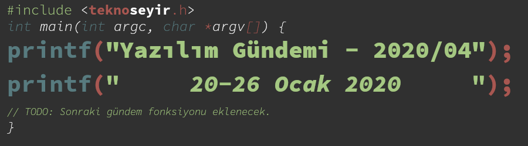
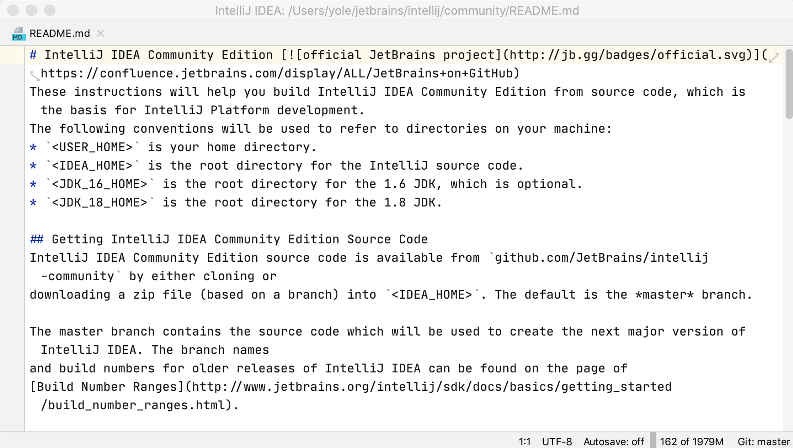
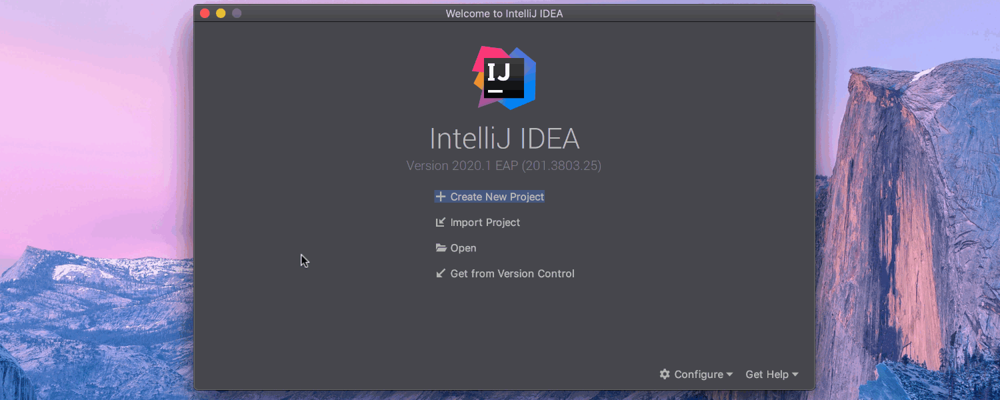
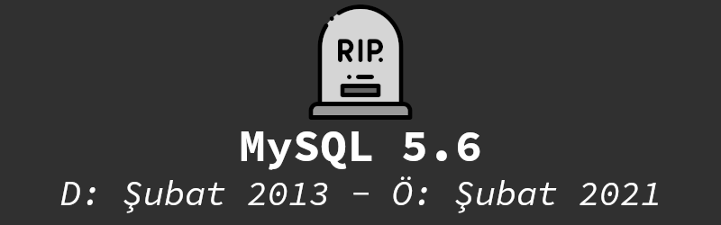

Yazılım Gündemi - 2020/04
20-26 Ocak 2020
İçindekiler
- 1. MEB ve BTG, "Delphi Eğitimi Protokolü" imzaladılar
- 2. JetBrains, IntelliJ tabanlı IDE'leri için 2020 yeni özellikler yol haritasını yayınladı
- 3. Microsoft Edge tarayıcısının geliştirici özelliklerine 3-boyutlu görüntüleme ekledi
- 4. MySQL 5.6'nın 1 yıllık ömrü kalmış
- 5. Yaklaşan Etkinlikler
- 6. Diğer Haberler
- 7. Lisans

< Önceki Gündem | 20-26 Ocak 2020 | Sonraki Gündem >
1 MEB ve BTG, "Delphi Eğitimi Protokolü" imzaladılar
Milli Eğitim Bakanlığı (MEB) ve Bilişim ve Teknoloji Grubu (BTG) (Delphi dilini geliştiren Embarcadero firmasının Türkiye Distribütörü) arasında bu hafta imzalanan protokole göre 1 milyon meslek lisesi öğrencisine Delphi programlama dili öğretilecekmiş. Türkiye yazılım camiasının bu hafta en çok konuştuğu konu buydu, o yüzden ben de biraz uzun bahsedeceğim bu konudan.
Türkiye yazılım camiasının birçoğu bu haberi HackerNews'de paylaşılan bu blog yazısı ile öğrendi. Şimdi başlık düzeltilmiş durumda fakat başlığın ilk hali şöyleydi: Turkey buys Delphi licenses for an estimated one million student [bunu yazının bağlantısındaki ilgili kısımdan siz de teyit edebilirsiniz]. Başlıkta "buys" (satın almak) kelimesinin geçmesinden dolayı herkes bu haberi "MEB, 1 milyon öğrenci için Delphi lisansı satın aldı" olarak algıladı. Türkçe kaynaklarda herhangi bir satın almadan ya da ücretten bahsedilmiyor fakat yine de başlığın yanlış yazılmasından dolayı çoğumuz da yanlış anladık. Ben de TeknoSeyir Sosyal'de paylaştığım gönderide "satın aldı" olarak yazmıştım fakat gün içerisinde herhangi bir satın almanın olmadığını öğrendiğimizde benimle birlikte yanlış anlayan çoğu kişi ilgili düzeltmeleri yaptılar. Daha sonra yayınlanan protokol metininde de şu maddenin olması içimize biraz olsun su serpti:
Madde 11- BTG düzenlenen faaliyetlerde öğrenci ve öğretmenlerden hiçbir ad altında ücret alamaz.
[Gerçi bu maddede "öğrenci ve öğretmenlerden ücret alınamaz" deniyor ama yine de protokolün devamındaki metinlerde MEB tarafı için de herhangi bir ödeme gözükmüyor.]
Yukarıdaki yanlış anlamadan dolayı çoğumuzun ilk argümanı "Delphi gibi eski ve günümüzde kullanılmayan bir dil için bu kadar kamu kaynağının aktarılması saçmalıktır" oldu. Aslında bakarsanız yanlış anlaşılma giderildikten sonra da argümanımızda çok fazla bir değişiklik olmadı. Sonuç olarak kamu kaynaklarından tek bir kuruş ödeme yapılmamış olsa bile Delphi gibi eski, sektörde neredeyse hiç kullanılmayan, kapalı kaynak, ücretli ve topluluk desteği olmayan bir programlama dilinin 2020 yılında gençlere öğretilmek istenmesi kabul edilemez. Sosyalde çeşitli gönderiler altında argümanlarımızı yazmıştım onları bütünlüklü bir hale getirmek gerekirse:
- Delphi kapalı kaynak, ücretli ve tek firmanın elinde olan bir programlama dilidir. Her ne kadar gençler bu programlama dili ve araçlarına okullarında kurulu olan laboratuvardan ücretsiz olarak erişilebilir olsa da bu işin bir de mezuniyet sonrası var. Delphi dilini ve araçlarını ticari olarak kullanmak isterseniz yıllık 1700€ ücret vermeniz gerekiyor. Delphi Community Edition isimli bir sürümü de mevcut fakat onun için de yıllık kazancınızın 5.000$ altında olması gerekiyor, bu miktarı geçerseniz ücret lisans almanız gerekiyor. Açık kaynak ve özgür lisanslı, ücretsiz programlama dilleri ile geliştirme yapıp tek kuruş lisans ücreti ödememek varken niye Delphi kullansın bu gençler?
- Çeşitli platformlardaki tartışmalarda karşıma çıkan argümanlardan birisi de "Delphi öğrenmesi kolay, sürükle&bırak mantığıyla uygulama tasarlayıp, derleyip, çalıştırabileceğiniz bir dil. Hem hızlı uygulama çıkarabilmek hem de görsellikten dolayı eğitim için uygundur". Bu argümanın katıldığım noktaları var. Özellikle o yaşlardaki gençlerin daha çok sonuç odaklı olarak yazdıkları kodların çıktılarını hemen görmek istemelerini gayet anlayışla karşılayabiliyorum ve Delphi geliştirme ortamının bunu sağlayabildiğini biliyorum. Benim çekincem daha çevremde gözlemlediğim bazı durumlardan kaynaklanıyor. Şöyle ki: Meslek yüksekokulunda okurken, meslek lisesinden gelen arkadaşların Microsoft Frontpage ve Adobe Dreamvewer gibi sürükle&bırak modeli üzerine kurulu uygulamalarda HTML ve CSS öğrendiklerinden dolayı, üniversitede zorluklar yaşadılar. Çoğu HTML ve CSS kodlarını görmemişti. Üniversitedeki hocamız da doğal olarak sürükle&bırak yerine kod yazarak ders işlediğinden dolayı bu arkadaşların derslerden geri kaldıklarını gözlemledim. Elbette bu örnekler ile Delphi'yi kıyaslamak çok doğru olmayacaktır ama günümüzde pek kullanılmayan bir geliştirme ortamı olması dolayısıyla gençlerin günümüz yazılım geliştirme süreçlerine entegre olmalarını zorlaştıracağını düşünüyorum.
- Karşılaştığım argümanlardan bir diğerine gelecek olursak: "Delphi kullanarak, sürükle&bırak modelinde geliştirdiğiniz uygulamaları çok kolay şekilde platformlar-arası (cross-platform) uygulama haline getirebilirsiniz. Yazdığınız uygulamaları Windows, macOS, GNU/Linux ve Android gibi sistemlerde çalıştırabilirsiniz. Bunu yapabilecek başka bir platform öneriniz var mı?". Bu argümana cevabım ise Delphi IDE'sinin üzerine kurulu olduğu sürükle&bırak geliştirme modelinin günümüz geliştirme süreçlerinde pek de aranan bir şey olmadığı, dolayısıyla da önerimin olmadığı yönünde oldu. Her ne kadar Delphi gibi sürükle&bırak modeliyle olmasa da bugün platformlar-arası uygulama geliştirmeye yarayan birçok framework mevcut. ElectronJS, Qt, Flutter vb. sistemleri örnek olarak sayabiliriz. Günümüzdeki bazı geliştirme modelleri, özellikle de ElectronJS'in üzerine kurulu olduğu model, benim de hoşuma gitmemesine rağmen sektör tarafından son derece kabul edilmiş ve yaygın uygulama geliştirme modelleri olarak karşımızdalar.
Benim argümanların genel olarak bu şekildeydi. Özetleyecek olursam: Delphi dili ve araçlarıyla kişisel olarak bir problemim yok ama maalesef bu dil ve araçlar günümüz için geçerli seçenekler değil. Gençlere açık kaynak ve özgür lisanslı, ücretsiz, topluluk tarafından desteklenen ve geliştirilen diller öğretmemizin daha doğru olacağını düşünüyorum. Nitekim Bilgisayar Mühendisleri Odası da hemen hemen bu yazdıklarıma yakın bir şekilde kendi bildirilerini yayınladılar ve Milli Eğitim Bakanlığı'ndan bu protokolü iptal etmelerini talep ettiler.
Bu konuda siz ne düşünüyorsunuz? Yorumlar bölümünde konuşalım.
2 JetBrains, IntelliJ tabanlı IDE'leri için 2020 yeni özellikler yol haritasını yayınladı
Geçtiğimiz senedeki yazılım gündemlerinin birinde (bkz: Yazılım Gündemi - 22) JetBrains'in, IntelliJ Platformu için yayınladığı 2020 yol haritasını konuşmuştuk. O yazıda daha çok platformun daha derinlerindeki özellikler ile ilgili yol haritasından bahsetmişlerdi. Bu hafta yayınladıkları "IntelliJ-based IDE Features Roadmap for 2020" başlıklı yazı ile daha çok biz geliştiricilerin etkileştikleri yerlere ilgili özelliklerin yol haritasını yayınladılar. Şöyle birkaç alt başlığa göz atalım:
2.1 IDE'yi genel amaçlı metin düzenleyici olarak kullanabilme

JetBrains IDE'lerinin kullanıcıları üzerlerinde çalıştıkları projelere ek olarak aynı zamanda çeşitli farklı dosyaları da bu IDE'ler ile düzenlemek istiyorlarmış. Mesela log dosyalarını görüntülemek, sunucu ayar dosyalarını düzenlemek gibi. Elbette bunu yapmak mümkün fakat JetBrains IDE'leri daha çok proje tabanlı çalışmaya uygun oldukları için tek bir dosya açsalar bile sanki bir proje açmışlar gibi gözüküyordu ve bazı yavaşlamalar oluyordu. 2020 yılında artık JetBrains takımı, IDE'lerini genel amaçlı metin düzenleme (text editor) işleri için de kolayca kullanılabilir hale getirmeyi planlıyorlar. Bunun için de özel bir mod hazırlıyorlarmış. Benim tahminim büyük ihtimal komut satırından bir dosyayı açarken "phpstorm –text-mode deneme.log" gibi bir komut çalıştıracaksınız ve bu mod o şekilde açılacak. Elbette bu modun daha hızlı açılabilmesi için çoğu IDE özellikleri çalışmayacak fakat kullanıcıların birçoğunun ihtiyaçlarını karşılayacaktır. Aynı zamanda bu moddan normal IDE moduna geçmek için de yol olacak deniyor.
2.2 Makine öğrenmesi tabanlı kod tamamlama önerileri
JetBrains IDE'lerinin en meşhur özelliklerinden biri de çok gelişmiş kod tamamlama ve öneri sisteminin olmasıdır. Benim de kullandığım zamanlarda gerçekten çok işime yarayan özelliklerden biriydi. Biraz da kavramın popülerleşmesinden dolayı olsa gerek artık bu öneri sistemine "makine öğrenmesi" ekleyeceklermiş. IDE'lerin son sürümlerinde bazı makine öğrenmesi yöntemlerinden faydalanmışlar ama sonraki sürümlerinde bu daha da geliştireceklerini ve geliştirme sürecinin çok büyük bir eforunu bu kısım üzerine yoğunlaştırdıklarını belirtmişler.
2.3 Geliştirme ortamının kurulması
JetBrains takımı artık IDE'leri kuranlara yardımcı olmak için geliştirme ortamıyla ilgili bazı kurulumlarda da yardımcı olacakmış. Mesela Git'in kurulması ya da bir JDK sürümünün kurulması gibi. Böylece JetBrains IDE'lerini kullananlar geliştirme ortamlarını daha hızlı bir şekilde hazır hale getirebilecekler. Şahsen ben bu tarz kurulumları yine kendim elle yapmak isterim ama istemeyen geliştiriciler için güzel bir kolaylık olacaktır diye düşünüyorum.
Bu özelliklerden bazılarını IDE'lerinin 2020.1 sürümlerinde kullanıma açılacağını belirtmişler. Nitekim yine bu hafta yayınlanan IntelliJ IDEA 2020.1'de bu sözleri yerine getiriyorlar. Henüz erken erişim programında olan bu sürüm ile birlikte yukarıda "Geliştirme ortamının kurulması" alt başlığında bahsettiğim JDK sürümleri indirme özelliğini eklemişler.

2020 yılı yeni özellikler yol haritasının tüm alt başlıkları için konu başlığına eklediğim bağlantıya; IntelliJ IDEA 2020.1 EAP sürümünün detaylarıyla ilgili bilgiler için de bu bağlantıya tıklayabilirsiniz.
3 Microsoft Edge tarayıcısının geliştirici özelliklerine 3-boyutlu görüntüleme ekledi
Geçtiğimiz haftalarda tüm kullanıcılar için Beta programından çıkan Microsoft'un yeni Chromium tabanlı tarayıcısı Edge'in içerisindeki geliştirici araçlarına güzel bir özellik eklenmiş. Artık bir web sitesi üzerindeki elemanları 3 boyutlu olarak inceleyip, özelliklerine bakabileceğiz. Henüz sadece deneysel (experimental) olan bu özelliği aktifleştirmek için Edge'deki DevTools kısmını açtıktan sonra Settings sekmesi altından "Enable 3D View" seçeneğini işaretlemek gerekiyor.
Özelliği daha iyi anlayabilmek adına Twitter'daki Microsoft Edge DevTools isimli hesabın paylaştığı videoyu izleyebilirsiniz.
4 MySQL 5.6'nın 1 yıllık ömrü kalmış

Bu haber doğrudan biz geliştiricileri ilgilendirmiyor ama dolaylı yoldan da olsa bizi etkileyebileceği için gündeme almak istedim. MySQL veritabanının 5.6 sürümü Şubat 2021 tarihinde aramızdan ayrılacakmış. Sistem yöneticilerinizi konuyla ilgili bilgilendirebilirsiniz.
5 Yaklaşan Etkinlikler
| Etkinlik İsmi | Yeri | Tarihi |
|---|---|---|
| ML in the cloud: Cloud AI Platform | Ankara | 29 Ocak 19:00 |
| CoffeeDroid 5 - Kaldığımız yerden devam edelim | İstanbul | 29 Ocak 19:00 |
| Geliştirici Savaşları Bölüm 1: Gizli Tehlike | İstanbul | 30 Ocak 16:00 |
| An Inside Look: Indie Games Accelerator | Ankara | 30 Ocak 18:30 |
| OpenShift ile DevOps Pratiklerini Nasıl Deneyimleriz? | İstanbul | 30 Ocak 19:00 |
| Coffee and React Native | İstanbul | 1 Şubat 11:00 |
| Istanbul Coffee and Talk - 1 (Flutter Turkiye) | İstanbul | 2 Şubat 13:00 |
| Serverless Application with Flutter and Cloud Functions | İzmir | 2 Şubat 13:00 |
| İstegelsin Serverless AWS Lambda Mimarisi ve Production Tecrübeleri | İstanbul | 4 Şubat 18:30 |
| AWS Fundamentals: Computer, Networking, Security, Storage and more | Ankara | 5 Şubat 18:30 |
| Tanışma toplantısı! (ReactJS Istanbul) | İstanbul | 5 Şubat 19:00 |
| Indie Hackers Istanbul Meetup | İstanbul | 8 Şubat 17:00 |
6 Diğer Haberler
- Microsoft, yeni Node tabanlı tarayıcı otomasyonu projesini yayınladı: Playwright.
- ProtonVPN tüm uygulamalarını açık kaynak hale getirdi.
- Android Studio 4.0 Canary 9 sürümü yayınlandı.
- Birçok AndroidX kütüphanesine güncelleme geldi.
- Google Cloud ailesinin yeni üyesi tanıtıldı: Secret Manager.
- Intel tarafından geliştirilen Ray Tracing motorunun 2.0.0 sürümü yayınlandı.
- Pharo programlama dilinin 8.0 sürümü yayınlandı.
- Seq programlama dilinin v0.9.3 sürümü yayınlandı.
- Flamegraph kütüphanesinin v0.2.0 sürümü yayınlandı.
7 Lisans

Yazılım Gündemi - 2020/04 yazısı Eren Hatırnaz tarafından Creative Commons Atıf-GayriTicari-AynıLisanslaPaylaş 4.0 Uluslararası Lisansı (CC BY-NC-SA 4.0) ile lisanslanmıştır.